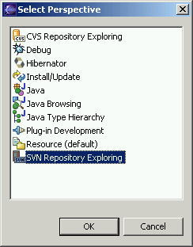
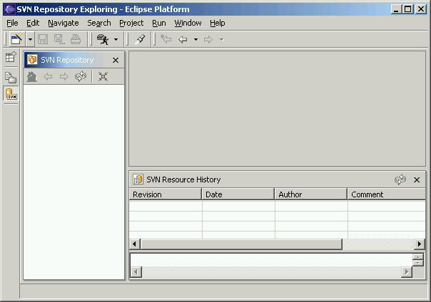

If you are already working with a working copy, you still need to let Eclipse know that the SVN working-copy is already in place. See Connecting an Existing Project for more information.
SVN Repository Exploring Perspective
Creating a new Repository Location
Connecting an Existing Project
Setting up a Repository